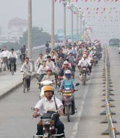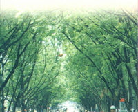
南宁掠影：南宁是广西壮族自治区的首府，全区的政治、经济、文化中心。她终年常绿，四季花开，草经冬而不枯，花非春而常放，形成了半城绿树半城楼，绿在城中，城在绿中，绿化、美化、彩化与亚热带风光融为一体的园林风貌特色，被誉为中国的“绿都”。
南宁，像人一样多的是树，像树一样多的是摩托车，凡是到过南宁的人恐怕都会有这种印象——每一条街都有树，密匝匝地林立在街道的两旁，像是一排排巨大的绿伞。然后再看那树下，目不暇接的摩托车真像是庞大的鱼群，在争先恐后地游行。那些骑在摩托车上的人，或行色匆匆，或风尘仆仆，无论酷暑、刮风、下雨，他们都戴着头盔。他们的摩托车大都有一个后箱，里面装着出门所需的物件，有两样是必备的：雨衣和证件——这是他们能在这个城市通行的保证。南宁是个多雨的城市，有时候连续几天几夜的大雨，部分街区出现内涝。一些道路被阻塞，那些搁浅在水中的几乎全是四轮的车辆，只有摩托车能够机巧地穿过汽车的夹缝，到达目的地。在上下班高峰的时候，摩托车更是显示其便捷的神通，像瘦子和胖子赛跑一样，总是能把一辆辆大车抛在身后。但是在通过路口的时候，摩托车手的目光必须保持敏锐，因为交通警察一样用犀利的目光注视着对方，纵使有人躲过警察的肉眼，也躲不过装在高架上的电子眼，除非你循规蹈矩……更多精彩
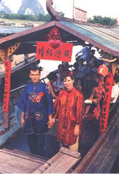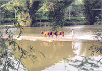
桂林掠影：始于秦朝，兴于唐宋，盛于明朝的桂林，已有2000多年的历史。因桂花成林而得名，是享誉世界的风景游览城市和历史文化名城。桂林属于亚热带，气候宜人，生态环境甚佳，可常年旅游。全市人口476万，居住着12个民族。典型的喀斯特地貌构成了世界上最美的山水奇观，诸多的历史名人，中外游客，国家元首纷至沓来，爱慕叹止——桂林山水甲天下。
广西阳朔建县已有1410年历史，这里受战乱破坏影响较少，至今保存许多少数民族和外地移民的丰富文化，形成了诸家民俗文化集结。而今发展地方旅游，这种文化搭起各自的“台子”，为旅游经济唱出一出出富有地方特色的民族风情戏，形成了名噪海内外的“阳朔文化”现象。
据了解，如今不足3万人口的阳朔古镇一年接待中外游客就达180万人次，一条小小的西街成为中国最热门的洋人街，许多游客一到阳朔就如醉如痴，住下来舍不得走。有的每年来几次，有的干脆在这里成家立业，目前这里已有几百对涉外婚姻，有日本郎娶阳朔妹为妻的，又有阳朔娃仔讨瑞典洋妞做老婆的，也有法国小伙子到阳朔当上门女婿的，还有英美两个姑娘争抢阳朔农民做夫君的……德国旅行家卡尔说，千万个来客就有千万个阳朔故事。海内外专家都把这种阳朔文化现象作为中国文化底蕴的一个课题进行探讨和研究……更多精彩
柳州掠影：柳州市又称龙城、壶城，是中国历史文化名城之一，又是广西壮族自治区的工业重镇。柳州市是广西壮族自治区直辖市，地处柳江流域中游。柳江由西向东蜿蜒回绕。市区山环水抱，呈壶状，景色奇特。因柳州地形“四野环山立，一水抱城流”，柳州才有了壶城这个别称。柳州素有“桂中商埠”之美誉，交通便利，湘桂、黔桂、枝柳、黎湛等铁路干线在此交汇，公路四通八达，飞机直航北京、广州、深圳、上海、北海等大中城市，水运可直达梧州、广州、香港、澳门。
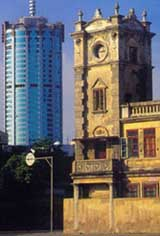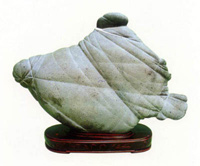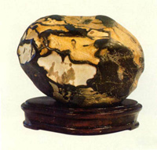
石玩是中国传统赏石文化的一个重要分支。何谓“赏石文化"?一切观赏天然奇石的行为、活动及其理论、原则、心得、感受之谓也。赏石文化不同于广义的“石文化",因为它不包括以各种石头为原材料的石制品、宝玉石及其开发、利用、加工制作技艺与理论。赏石行为的观赏对象仅限于天然奇石,其主要功能是为了满足人们审美、观赏的精神需要,一般很少具备实际使用价值。天然奇石按其可移动性又可大别为:大自然中的奇峰怪石;建筑物所处环境中人工点缀的造园景石;建筑物厅堂中、几案上、人们衣袋内供观赏、把玩的石玩二大类群。奇峰怪石属自然山水的精华,是不可移动的；景石虽体量较大,但仍可移动,不过也只能置诸室外,用于造景;只有“石玩”一类乃天然奇石之体量较小而精巧者,才可登堂入室,或供人赏玩于股掌之间。故从空间角度论,石玩也可称之为室内赏石艺术,属赏石文化的精华部分。
柳州一带多山,地理、地质情况复杂,大自然中的奇峰怪石、奇山秀水常引人遐思、留连忘返;柳州!人在城市绿化和造园中大量应用的各种景石,又把奇峰怪石引入城市街道、庭园和房前屋后,并按照自然生态和艺术要求精心布局,则近一步创造了柳川作为山水园林城市的一大地方特色。石玩艺术更是深受柳州市民喜爱的一种社会文化现象,不仅醉心此道的玩石者众,且有一批颇具规馍的公私石馆,和一支以石为业、包括奇石产地群众、城镇石商和石玩收藏者、鉴赏家、爱好者在内的产业大军及赏石队伍。他们在龙城内外、街头巷尾搞得红红火火,在城乡特定的地方,形成了若干大大小小的石头市场,并对国内外赏石界产生了一定影响。中外及港、澳、台人士来柳采购者络绎不绝, 年外销量达数百吨以上……更多精彩
北海掠影：北海是著名的滨海旅游城市，近年来已成为我国继海南之后又一节假旅游热点城市。作为一个游人，北海这座城市给人的最深印象恐怕就是古老的珍珠传说和一切与珍珠有关的东西了；南洋风格的骑楼民居，涠洲的天然古朴，银滩的碧波粼粼，当然，还有临海的海鲜大排档诱人的香气，珠海路老街家家户户门边晾晒的咸鱼干，悠闲的赶海拾贝，出海渔民的祭祀。甚至疯狂一点说，北海湾的滑水、帆板、水上运动、沙雕、沙滩篝火和焰火……如此种种，哪一样又不是这个南方海滨小城的炫目亮点呢？
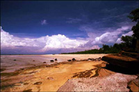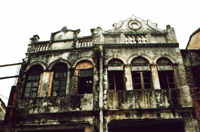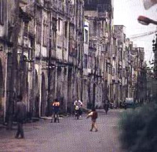
珠海路是一条有一百多年历史的老街，始建于1883年，长1.44公里，宽9米，沿街全是中西合璧骑楼式建筑。
这些建筑大多为二至三层，主要受19世纪末叶英、法、德等国在我市建造的领事馆等西方卷柱式建筑的影响，临街两边墙面的窗顶多为卷拱结构，卷拱外沿及窗柱顶端都有雕饰线，线条流畅、工艺精美。临街墙面部不同式样的装饰和浮雕，形成了南北两组空中雕塑长廊。这些建筑临街的骑楼部分，既是道路向两侧的扩展，又是铺面向外部的延伸，人们行走在骑楼下，既可遮风挡雨，又可躲避烈日；骑楼的方形柱子粗重厚大，颇有古罗马建筑的风格。
1927年以前，珠海路曾是北海最繁华的商业街区，店铺鳞次栉比，中段的店铺主要经营来自苏杭的绸缎，东段的店铺主要经营鱿鱼、沙虫、虾米、鱼干等干海货，西段接近外沙港口，所有店铺全部经营缆绳、鱼网、鱼钩、渔灯、风帆布、船钉等渔民用品。
随着时间的推移，珠海路逐渐失去了昔繁华，除了稀稀落落还有屈指可数的几间店铺经营渔具外，其他店铺已几乎成为民居，街道建筑日渐老化，但由于珠海路尚算保存完整，仍被历史学家和建筑学家们誉为“近现代建筑年鉴”。
著名作家舒乙（老舍之子）认为，珠海路和新加坡国宝级的老街一模一样，建议我市保护好这条极具开发价值的老街。英国建筑专家白瑞德先生认为，珠海路的历史文化价值，不但对北海意义，而且对华南地区、全中国、及至全世界都有意义。加拿大蒙特利尔市市长皮埃尔.布尔克则建议北海向联合国教科文组织提出申请，将珠海路作为世界文化遗产来保护……更多精彩
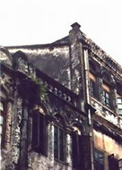